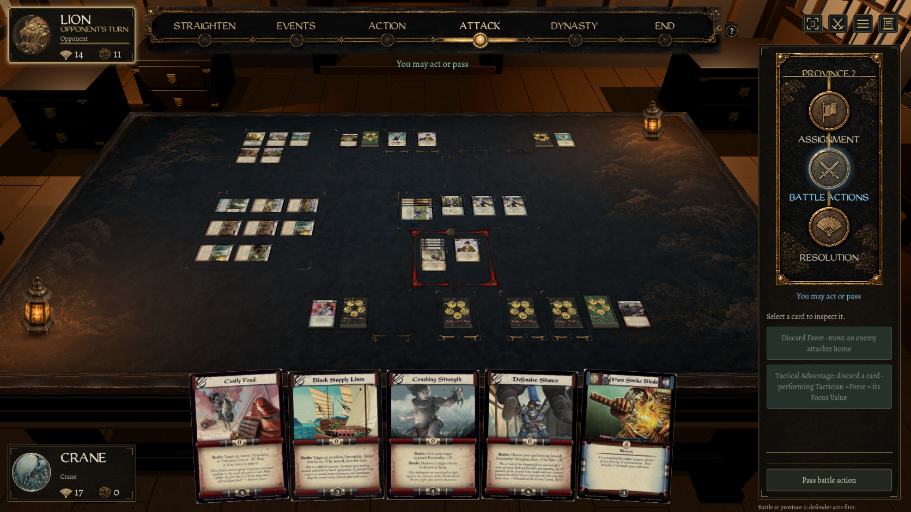

The room around the live board
Milestone 2 · Godot camera and interaction review · 15 September 2026
Review the space, the board framing and movement. Cabinets are placement models; the aged Meshy furnishings, distressed room materials and final cinematic lighting are the next pass. This is a working 3D integration, not a claim of finished concept fidelity.
Approved direction / native game
 Approved source · 1672 × 941The later request for a larger room is incorporated in the native layout.
Approved source · 1672 × 941The later request for a larger room is incorporated in the native layout.

Live game · 1672 × 942macOS rounded the window height to 942. Game cards and state remain live; the concept is not projected onto the room.
Native camera checks
Native Mac checks cover cursor-anchored zoom, middle/empty-cloth/Space dragging, arrow pan, Home reset, upright/bowed card targeting, fixed HUD and modal isolation. The room's projected ground points agree with the card plane within 0.001 pixels in this suite. No native Windows or expert full-match acceptance is claimed. Click images for their original resolution.